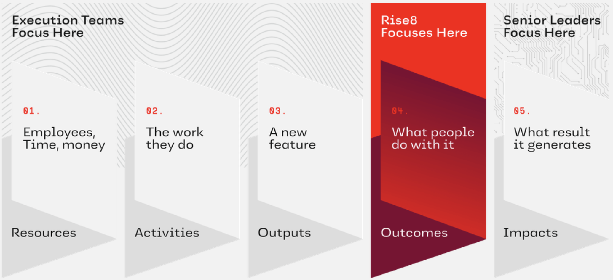
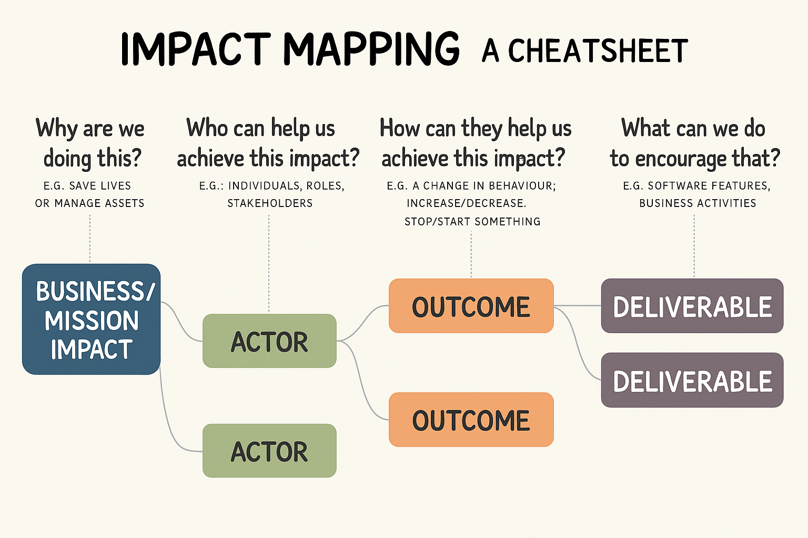

Impact Mapping
What is Impact Mapping?
Impact Mapping is a strategic planning and alignment technique designed to help teams visualize the cause-and-effect relationship between the outcomes they aim to achieve and the deliverables they plan to build. It creates a shared understanding among cross-functional teams about what will drive meaningful mission or business impact.
At Rise8, we use Impact Mapping to:
- Align work with measurable Mission/Business Impact
- Facilitate strategic conversations with stakeholders
- Prioritize deliverables that create real change
- Avoid building outputs that don't serve user or mission needs

While you may find a different standard formats for Impact Mapping tools outside of Rise8, we have modified the four key dimensions to match how we speak about outcomes in prod which was borrowed from Josh Seiden's framing of Outcomes over Outputs:
- Business / Mission Impact (what we want to measurably change for our customer/organization; formerly “Goal”)
- Actors (who can influence outcomes)
- Outcomes (system or user behaviors we want to change; formerly "Impact")
- Deliverables (what we might build)

Why It's Valuable
Impact Mapping helps teams avoid the feature factory trap by focusing on what needs to change, for whom, and why. It's a natural complement to:
- Value Stream Mapping, which confirms how value currently flows (or doesn’t), and how to measure it
- OKRs, which define the measurable goals we’re aiming for
- DDD Event Storming, Boris, Swift Method, which models domain events and interactions
- Service Blueprint, which defines your user experience & operational architecture
- Outcome-oriented Roadmap, which communicates and aligns your team and stakeholders to what gets worked now, next and later to address our current conditions
When used correctly, Impact Maps:
- Uncover hidden assumptions
- Clarify intent before jumping to solutions
- Strengthen outcome-first thinking
- Improve stakeholder alignment
- Promote an experimental-led hypothesis approach to delivering software
Related Frameworks: When and Why to Use Each
| Framework | What it is | Compared to Impact Mapping |
|---|---|---|
| Opportunity Solution Tree (OST) | OST starts with an Outcome - meaning a change in behavior that is, for example, derived from a team level key-result. | An Impact Map looks for a company-wide health indicator (Impact) as the primary anchor, starting with a company or business level OKR. |
| OKRs | The Key Results of a more tactical OKR set typically express a specific change in behavior, aka Outcome. | Theres a strong correlation between the HOW level of an Impact Map and the Key Results of a team. Discovery work leads to validated Outcomes (documented in an Impact Map). |
| North Star Framework | Product strategy and leading indicator alignment with a single North Star Metric and supporting inputs. | Impact Mapping helps explore questions about the Who, How, and What. |
| JTBD | Understanding and predicting motivations and context related to Consumers' Jobs (their unmet goals and constraints), and a common language for demand, opportunity and growth. | Helps teams ensure that everyone remains in alignment and focus throughout their discovery efforts. |
Prerequisite: Have a Clear Impact Target
Before running an Impact Mapping exercise:
- Confirm that your team has a clearly defined and quantified Mission/Business Impact as well as current and target state outcome targets
- Without these, you risk generating a list of disconnected activities with no clear prioritization logic, or way of determining success as you run experiments
If you don’t have these yet:
- Start with Value Stream Mapping, DDD Event Storming, Boris, Swift Method, and Service Blueprint
- Use those outputs to anchor your Impact Map
How to Facilitate an Impact Mapping Session
Prep Checklist
| Item | Description |
|---|---|
| Canvas | Apply Rise8’s custom layout: Impact → Actors → Outcomes → Deliverables |
| Facilitator | One lead facilitator to guide the session and prompt critical thinking |
| Participants | Balanced team members (Product, Design, Engineering) + Key stakeholders |
| Context Brief | Background material on problem space, relevant data, and mission objectives |
| Timer | To time-box each mapping phase and ensure momentum |
| Whiteboarding Tool | Miro, Mural, Figjam, or physical whiteboard with sticky notes |
Facilitation Steps
| Step | Actions to take |
|---|---|
| 1. Frame the Mission Impact | - Revisit the VSM or OKR related quantified impact you’re targeting - Write this at the top of the canvas tree under Business / Mission Impact - Ensure shared clarity across all participants |
| 2. Identify Actors | - Who can enable or block this impact? - Consider internal roles, external users, partners, and regulators - Capture each actor in the second column |
| 3. Define Behavioral Outcomes | - For each actor, what specific behavior must change? - Use the format: _"We need [actor] to [do something measurably different]" - Focus on behavior, not sentiment |
| 4. Brainstorm Potential Deliverables | - What could we do or build to influence these behaviors? - List multiple options per outcome — don’t filter too early - Use this moment to provoke critical conversations ("Will this actually cause the behavior change?" "What's more likely to change the behavior?" "what's more likely to exceed our change in behavior target metric?") |
| 5. Cluster and Prioritize | - Group deliverables that support the same outcome - Assess risk vs impact vs effort to scope your experiment - Use dot voting or 2x2 prioritization if needed |
| 6. Frame Hypothesis Experiment | - Succinctly explain the problem/opportunity encompassing both the current state of user/system goals/wants/needs not being met, and mission impact - Refine your hypothesis as, “We believe [output(s) → solutions we plan to do/build], will drive [outcome → a desired user/system behavior change] and lead to [mission impact → a result that is generated]”. - Confirm what empirical behavior evidence will validate your hypothesis as, "Our hypothesis is valid if…[replace with quantitative and/or qualitative measures of user/system behavior change]." - Confirm what empirical evidence will validate behavior changes led to greater mission impact as, "Leading to…[replace with quantitative and/or qualitative measures of mission impact]." - Now you're ready to align with your Outcome-oriented Roadmap |
Tips for Better Output
- Encourage divergent thinking early, then converge later
- Keep the language behavioral and concrete
- Use data or anecdotes to challenge assumptions
- Ask "If we build this, why do we believe it will cause that outcome?"
Common Pitfalls to Avoid
| Pitfall | How to Avoid It |
|---|---|
| Jumping straight to, and working backwards from, deliverables | Force conversation to stay in Outcomes layer until well-explored |
| Vague impact statements | Quantify impact — don’t settle for "improve UX" or "streamline workflow" |
| Overloading the map | Limit deliverables to high-impact hypotheses, not every possible idea |
| Groupthink | Actively invite dissenting views to expose blind spots |
After the Session: What’s Next?
- Synthesize the output into a cleaned-up map
- Highlight any assumptions or validation needs
- Connect prioritized Impact, Outcomes and Deliverables to your Outcome-oriented Roadmap
- Use the map in stakeholder conversations to justify choices